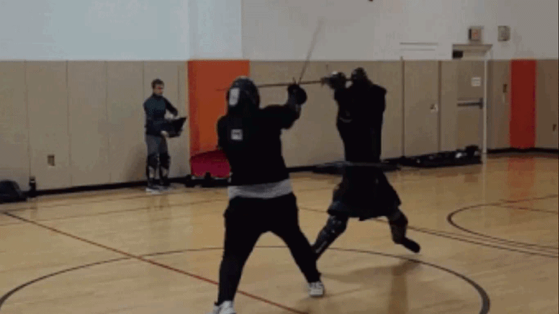
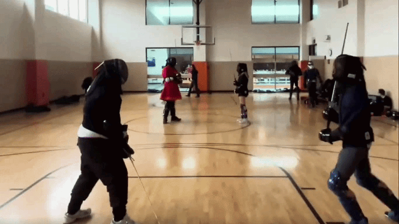

Historical European Martial Arts
I've been doing Historical European Martial Arts (or HEMA) since the tail end of 2022. I've spent most of my time at RIT's club (that's where the very low-quality GIFs shown here were taken), since that's where I've been located, but I've also poked into other clubs and events during time away from campus.
I primarily do longsword, predominantly the Italian style (Fiore and Vadi with a hint of Marozzo). Formally, I've mostly been taught Meyer, but I've done my own reading of the Italian manuals (and interpretations of them, such as Guy Windsor's), since I find that fits my style a bit more. I've run a handful of classes on grappling at the sword, binding and the exchange of thrusts, and an overview of the Italian style, all based off of that reading (as well as off of other classes I've attended).
Here are notes for some of the lessons I've taught. I try to include all my sources and justify everything I teach to make up for any lack of experience.
- TODO
I've made a few failed attempts at rapier, and I own a montante which sees very little use because of very reasonable safety concerns.
I've never competed at a formal tournament (barring internal club tournaments, and a single intercollegiate event back in early 2024), but I enjoy the sport enough that I wanted to put it on my site as part of the collection of things I do or have done.